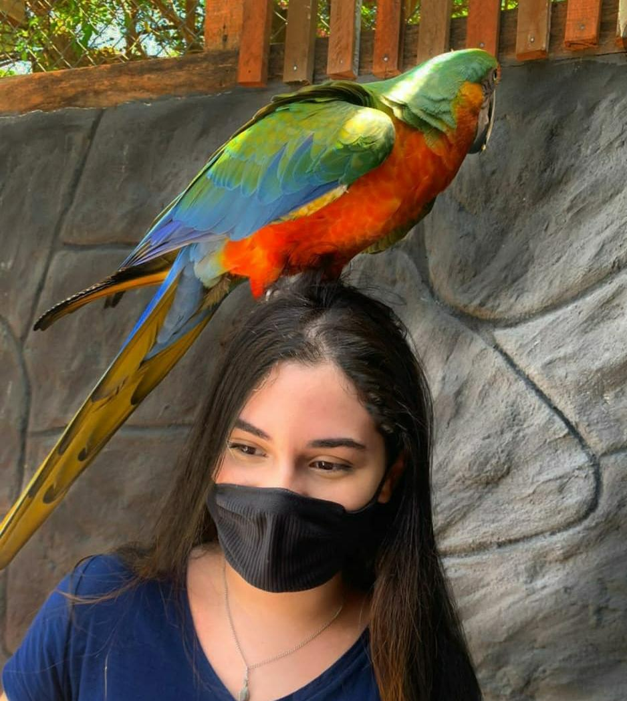

//
Sou Amanda Albuquerque.
E esse é meu Miniport totalmente responsivo, criado para a matéria de coding mobile, tema de PWA.
Tenho 20 anos e estudo Análise e desenvolvimento de sistemas na Faculdade Senac, com formação prevista para dez/2023
Gosto muito da área de Front-end e UX Design
Espero que goste da minha breve apresentação